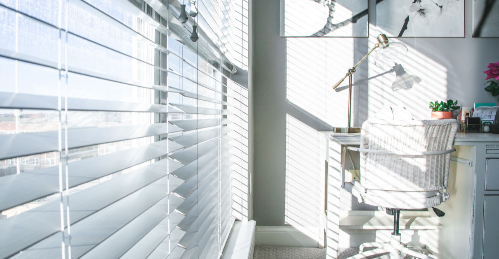
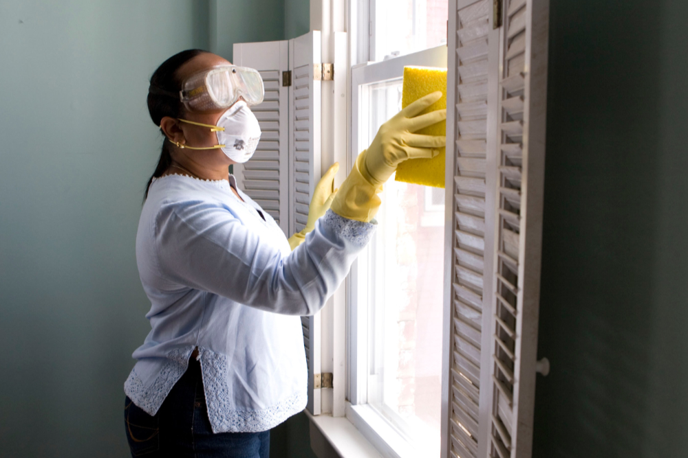

Glas ist nach wie vor einer der beliebtesten Baustoffe und auch bei der Inneneinrichtung findet Glas vielfache Einsatzmöglichkeiten.
Neben der klassischen Fensterreinigung (mit und ohne Rahmenreinigung) bringen wir auch alle anderen Glasoberflächen zum glänzen. Dazu gehören:
Wir beraten Sie, wenn Sie Hilfe bei der Reinigung von Glasflächen benötigen.
Auch die schönste Jalousien werden mit der Zeit unansehnlich: Staub und Flecken, Nikotin und Fliegendreck setzten sich fest. Für Allergiker, empfindliche Menschen und alle, die Wert auf Sauberkeit und Hygiene legen, schaffen wir schnelle und gründliche Abhilfe mit unserer professionellen Reinigung:
"Wer trübe Fenster hat, dem erscheint alles
grau."
- Altes Sprichtwort

x